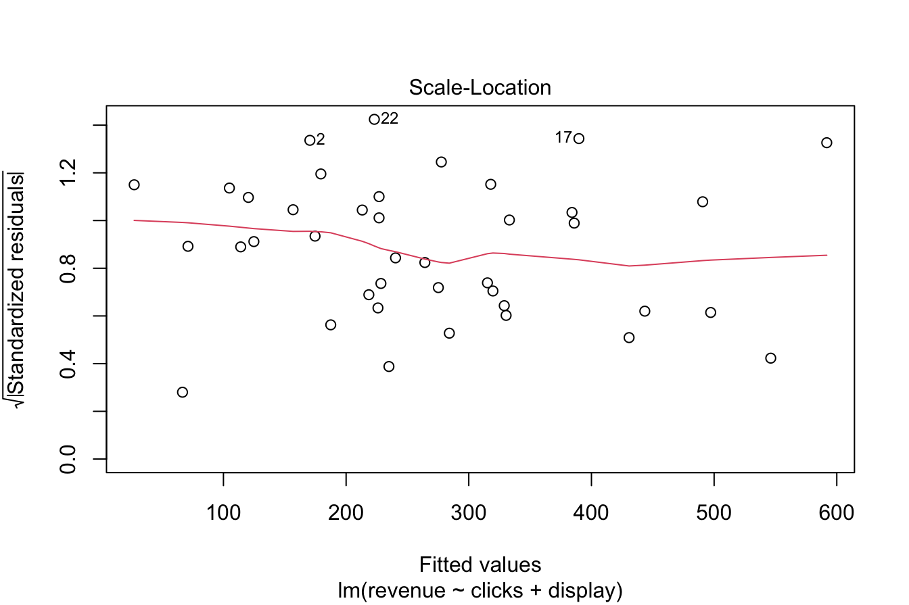
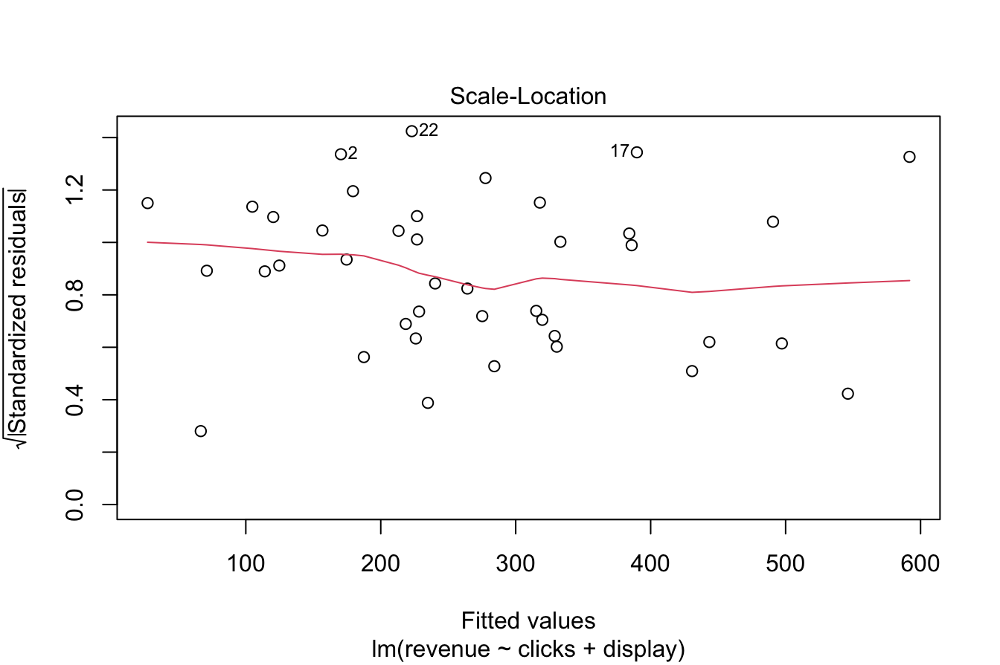

10 Regression Modeling: From Basics to Advanced Techniques
Regression modelling has been a cornerstone of statistical analysis for centuries, evolving into one of the most powerful and versatile tools in data science. Its origins trace back to Isaac Newton’s work in the 1700s, with the term “regression” later introduced by Francis Galton in the 19th century to describe biological phenomena. Early pioneers like Legendre and Gauss laid the mathematical groundwork with the development of the least squares method, and today, thanks to advancements in computing and programming languages like R, regression analysis is accessible, scalable, and integral to solving real-world problems.
As Charles Wheelan eloquently puts it in his book “Naked Statistics”:
Regression modelling is the hydrogen bomb of the statistics arsenal.
What makes regression so powerful is its ability to quantify relationships between variables, uncover patterns, and make predictions. Whether you’re estimating the impact of advertising spend on sales, forecasting housing prices, or identifying the risk factors for a disease, regression modelling provides the foundation for evidence-based decision-making.
In this chapter, we will explore the essentials of regression, from its simplest form—simple linear regression—to more advanced techniques like generalized linear models (GLMs) and non-linear regression. By the end, you will not only understand the mathematical principles behind regression models but also gain practical experience applying them in R to analyze and interpret real-world data.
10.1 Simple Linear Regression
To explore regression methods for estimation and prediction, we will use the marketing dataset from the liver package. This dataset provides a straightforward and practical example of a real-world scenario, where a company seeks to optimize advertising spending to maximize revenue. Its small size and clean structure make it an ideal learning tool for understanding regression concepts. The dataset contains information on advertising campaigns, including spending, clicks, impressions, transactions, and daily revenue. The target variable, revenue, represents the daily revenue generated, while the other seven variables serve as predictors.
The marketing dataset, formatted as a data.frame, consists of 40 observations (rows) and 8 variables (columns):
-
spend: Daily spending on pay-per-click (PPC) advertising.
-
clicks: Number of clicks on the ads.
-
impressions: Number of ad impressions per day.
-
display: Whether a display campaign was running (yesorno).
-
transactions: Number of transactions per day.
-
click.rate: Click-through rate (CTR).
-
conversion.rate: Conversion rate.
-
revenue: Daily revenue (target variable).
Let’s load and examine the structure of the dataset:
data(marketing, package = "liver")
str(marketing)
'data.frame': 40 obs. of 8 variables:
$ spend : num 22.6 37.3 55.6 45.4 50.2 ...
$ clicks : int 165 228 291 247 290 172 68 112 306 300 ...
$ impressions : int 8672 11875 14631 11709 14768 8698 2924 5919 14789 14818 ...
$ display : int 0 0 0 0 0 0 0 0 0 0 ...
$ transactions : int 2 2 3 2 3 2 1 1 3 3 ...
$ click.rate : num 1.9 1.92 1.99 2.11 1.96 1.98 2.33 1.89 2.07 2.02 ...
$ conversion.rate: num 1.21 0.88 1.03 0.81 1.03 1.16 1.47 0.89 0.98 1 ...
$ revenue : num 58.9 44.9 141.6 209.8 197.7 ...The dataset includes 8 variables and 40 observations, with 7 predictors and one numerical-continuous target variable (revenue). This clean dataset serves as a perfect starting point for regression analysis.
To understand the relationships between variables, we use the pairs.panels() function from the psych package to create a visualization:
pairs.panels(marketing)
This plot includes: Bivariate scatter plots (bottom-left) showing relationships between pairs of variables; Histograms (diagonal) showing the distribution of each variable; Correlation coefficients (top-right) quantifying the strength of linear relationships. For example, the variables spend and revenue exhibit a strong positive linear relationship, with a correlation coefficient of 0.79. This indicates that higher spending is generally associated with higher revenue, supporting the hypothesis of a linear relationship between these variables.
Fitting a Simple Linear Regression Model
To begin our analysis, we focus on a simple linear regression model that examines the relationship between a single predictor (spend) and the target variable (revenue). This provides a foundational understanding of regression before expanding to more complex models involving multiple predictors. First, let’s visualize the relationship with a scatter plot and overlay a regression line:

Figure 10.1: Scatter plot of daily revenue (€) versus daily spend (€) for 40 observations, with the fitted least-squares regression line (blue) showing the linear relationship.
Figure 10.1 displays the scatter plot of spend versus revenue for the marketing dataset, with the fitted least-squares regression line.
The regression equation is:
\[
\hat{y} = b_0 + b_1x
\]
where:
-
\(b_0\): Intercept with y-axis (estimated revenue when spending is zero).
-
\(b_1\): Slope of the line (change in revenue for a one-unit increase in spending).
-
\(\hat{y}\): Predicted value of the dependent variable (
revenue) for a given independent variable (spend).
-
\(x\): Independent variable (
spend).
Estimating the Model in R
We use the lm() function to estimate the regression coefficients:
simple_reg = lm(revenue ~ spend, data = marketing)The regression results are summarized using the summary() function:
summary(simple_reg)
Call:
lm(formula = revenue ~ spend, data = marketing)
Residuals:
Min 1Q Median 3Q Max
-175.640 -56.226 1.448 65.235 210.987
Coefficients:
Estimate Std. Error t value Pr(>|t|)
(Intercept) 15.7058 35.1727 0.447 0.658
spend 5.2517 0.6624 7.928 1.42e-09 ***
---
Signif. codes: 0 '***' 0.001 '**' 0.01 '*' 0.05 '.' 0.1 ' ' 1
Residual standard error: 93.82 on 38 degrees of freedom
Multiple R-squared: 0.6232, Adjusted R-squared: 0.6133
F-statistic: 62.86 on 1 and 38 DF, p-value: 1.415e-09The output includes the estimated coefficients, standard errors, t-statistics, p-values, and goodness-of-fit metrics. The estimated regression equation is:
\[ \text{revenue} = 15.71 + 5.25 \cdot \text{spend} \]
This means that:
- The intercept (\(b_0\)) is 15.71, representing the estimated daily revenue when no money is spent on PPC advertising.
- The slope (\(b_1\)) is 5.25, meaning that for every additional €1 spent, daily revenue increases by approximately 5.25.
Interpreting the Regression Line
The regression line serves as a linear approximation of the relationship between spending and revenue. We can use it to make predictions. For instance, suppose we want to predict the revenue for a day with €25 spent on advertising. Using the regression equation:
\[ \hat{y} = 15.71 + 5.25 \cdot 25 = 147 \]
Thus, the estimated daily revenue is €147. Suppose a marketing team wants to plan their budget for an upcoming campaign. If they spend €25 on PPC advertising, the model predicts an estimated revenue of €147. This insight can help guide spending decisions to maximize returns.
Residuals and Model Fit
Residuals (\(y - \hat{y}\)) represent the vertical distances between observed data points and the regression line. For example, one day in the dataset with a spend of €25 has an actual revenue of 185.36. The prediction error (residual) is:
\[ \text{Residual} = y - \hat{y} = 185.36 - 147 = 38.36 \]
Residuals help us identify potential patterns or deviations that the linear model may not capture, ensuring the model’s assumptions hold. For example, if residuals exhibit systematic patterns, such as curvature, it may indicate that the relationship between the variables is not truly linear, signaling the need for model adjustments.
The least-squares method minimizes the sum of squared residuals (SSE):
\[\begin{equation} \text{SSE} = \sum_{i=1}^{n} (y_i - \hat{y}_i)^2, \tag{10.1} \end{equation}\]
where \(y_i\) is the observed value, \(\hat{y}_i\) is the predicted value, and \(n\) is the number of observations. Minimizing SSE ensures that the regression line is the best linear fit to the data, providing the most accurate predictions. This approach remains the most commonly used for linear regression due to its simplicity and efficiency.
Key Insights
Here are some important takeaways from our simple linear regression analysis:
-
Intercept (\(b_0\)): The intercept represents the estimated revenue when spending is zero. In our dataset, \(b_0 = 15.71\), which makes sense as there are days with no spending.
-
Slope (\(b_1\)): The slope indicates that for every €1 increase in spending, revenue is expected to increase by approximately 5.25.
- Prediction Accuracy: While the regression line provides an excellent linear approximation, individual residuals reveal prediction errors for specific data points.
In summary, simple linear regression provides an effective way to model and interpret the relationship between two variables. By analyzing the marketing dataset, we demonstrated how to estimate, interpret, and apply a regression model to make predictions. The next sections will expand on these concepts by exploring techniques to assess model quality and extend regression to multiple predictors.
With this foundational understanding of simple linear regression, we are now ready to explore techniques to assess the quality of regression models and extend these methods to multiple predictors in the next sections.
10.2 Hypothesis Testing in Simple Linear Regression
In regression analysis, we use the estimated slope \(b_1\) from the sample regression equation to draw inferences about the unknown slope \(\beta_1\) in the population regression equation. The population regression equation provides a linear approximation of the relationship between a predictor (\(x\)) and a response (\(y\)) for the entire population, not just the sample data. It is expressed as:
\[ y = \beta_0 + \beta_1x + \epsilon \]
In this equation:
-
\(\beta_0\): The population intercept, representing the expected value of \(y\) when \(x = 0\).
-
\(\beta_1\): The population slope, representing the change in \(y\) for a one-unit increase in \(x\).
- \(\epsilon\): A random error term that captures the variability in \(y\) not explained by the linear relationship.
The goal of hypothesis testing in regression is to determine whether \(\beta_1\), the slope of the population regression line, is significantly different from zero. If \(\beta_1 = 0\), the regression equation simplifies to:
\[ y = \beta_0 + \epsilon \]
This indicates that there is no linear relationship between the predictor \(x\) and the response \(y\). Conversely, if \(\beta_1 \neq 0\), a linear relationship exists between \(x\) and \(y\). To formally test this, we conduct the following hypothesis test:
\[ \bigg\{ \begin{matrix} H_0: \beta_1 = 0 \quad \text{(No linear relationship between \(x\) and \(y\))} \qquad \\ H_a: \beta_1 \neq 0 \quad \text{(A linear relationship exists between \(x\) and \(y\))} \end{matrix} \]
In simple linear regression, the summary output of the model provides all the necessary information to test the hypotheses. Specifically, the slope of the regression line is estimated from the sample data as \(b_1\), along with the following key components:
-
Standard error: Measures the variability of the slope estimate \(b_1\).
-
t-statistic: Quantifies how many standard errors \(b_1\) is away from 0.
- p-value: Indicates the probability of observing a t-statistic as extreme as the one calculated, assuming \(H_0\) (i.e., \(\beta_1 = 0\)) is true.
Let’s revisit the simple linear regression results for the marketing dataset, where we modeled revenue (daily revenue) as a function of spend (daily advertising spend). The estimated slope \(b_1\) for spend is 5.25, with the following corresponding hypothesis test results:
summary(simple_reg)
Call:
lm(formula = revenue ~ spend, data = marketing)
Residuals:
Min 1Q Median 3Q Max
-175.640 -56.226 1.448 65.235 210.987
Coefficients:
Estimate Std. Error t value Pr(>|t|)
(Intercept) 15.7058 35.1727 0.447 0.658
spend 5.2517 0.6624 7.928 1.42e-09 ***
---
Signif. codes: 0 '***' 0.001 '**' 0.01 '*' 0.05 '.' 0.1 ' ' 1
Residual standard error: 93.82 on 38 degrees of freedom
Multiple R-squared: 0.6232, Adjusted R-squared: 0.6133
F-statistic: 62.86 on 1 and 38 DF, p-value: 1.415e-09From the output:
- The t-statistic for the slope is 7.93.
- The p-value is 1.4150362^{-9} (close to zero).
The p-value, 1.4150362^{-9}, is extremely small (near zero). This represents the probability of observing a t-statistic as extreme as the one calculated, assuming there is no relationship between spend and revenue (\(\beta_1 = 0\)).
Since the p-value is much smaller than the commonly used significance level (\(\alpha = 0.05\)), we reject the null hypothesis \(H_0\). This leads to the conclusion that the slope \(\beta_1\) is significantly different from zero, providing strong evidence of a linear relationship between spend and revenue.
The hypothesis test confirms that the predictor spend has a statistically significant impact on the response revenue. Specifically:
- The slope estimate \(b_1 = 5.25\) suggests that for each additional €1 spent on advertising, daily revenue increases by approximately 5.25 units.
- This result validates the use of
spendas a predictor forrevenue, providing a quantitative measure of their relationship.
Hypothesis testing in simple linear regression provides a formal way to evaluate the significance of the relationship between a predictor and a response variable. A statistically significant slope (\(\beta_1\)) indicates that changes in the predictor \(x\) are associated with changes in the response \(y\).
In the next sections, we will explore additional techniques to evaluate regression model quality and extend these concepts to multiple predictors, enabling more comprehensive analyses and better predictions.
10.3 Measuring the Quality of a Regression Model
How can we evaluate the effectiveness of a regression model? If we cannot reject the null hypothesis (\(H_0: \beta_1 = 0\)) in the hypothesis test, the model provides no evidence of a linear relationship between the predictor and response variable, making it ineffective. However, when we establish that \(\beta_1 \neq 0\), we rely on additional metrics to assess the quality of the regression model. Two key statistics for this purpose are the Residual Standard Error (SSE) and the \(R^2\) (R-squared) statistic.
The Residual Standard Error (RSE) indicates a measure of the size of the “typical” prediction error. It is defined as:
\[ RSE = \sqrt{\frac{1}{n-p-1} SSE} \] where SSE is the sum of squared errors as defined in Equation (10.1), \(n\) is the number of observations, and \(p\) is the number of predictors in the model. The RSE provides an estimate of the typical prediction error, with smaller values indicating a better fit.
A smaller SSE indicates that the regression model more accurately captures the variability in the response variable, producing better predictions. For example, in the simple linear regression model for the marketing dataset, the SSE is 3.3447117^{5}. This value represents the total squared error in predicting revenue from spend. The closer SSE is to zero, the smaller the typical prediction error, which indicates a higher-quality model.
The \(R^2\) (R-squared) statistic evaluates how well the regression model explains the variability in the response variable. It is defined as:
\[ R^2 = 1 - \frac{SSE}{SST} \]
where \(SST\) is the total variability in the response variable (\(y\)) before fitting the model, and \(SSE\) is the variability that remains unexplained after fitting the model. \(R^2\) represents the proportion of variability in \(y\) accounted for by the linear relationship with \(x\). For instance, if \(R^2 = 0.80\), it means that 80% of the variability in \(y\) is explained by the model, while the remaining 20% is due to factors not captured by the model.
In the simple linear regression model for the marketing dataset, \(R^2 = 62\)% (or 0.62 as a decimal). This means that 62% of the variability in daily revenue is explained by the linear relationship with daily spend. A higher \(R^2\) value suggests a better fit, with values close to 100% indicating an excellent fit. However, \(R^2\) alone cannot assess whether the model will generalize well to new data, so it is important to combine it with other diagnostics and validation techniques.
It is also important to understand the relationship between \(R^2\) and the correlation coefficient (\(r\)). In simple linear regression, the square of the correlation coefficient (\(r^2\)) is equal to \(R^2\). For example, the correlation coefficient between spend and revenue in the marketing dataset is 0.79, and squaring this value gives 0.62—a value that equals \(R^2\). This highlights how \(R^2\) reflects the strength of the linear relationship between the predictor and response variables.
You might also wonder about the difference between Multiple R-squared and Adjusted R-squared. While \(R^2\) measures the proportion of variance in \(y\) explained by the model, Adjusted \(R^2\) accounts for the number of predictors in the model. This adjustment prevents \(R^2\) from artificially inflating when irrelevant predictors are added to the model. Adjusted \(R^2\) is calculated as:
\[ \text{Adjusted } R^2 = 1 - \left(1 - R^2\right) \cdot \frac{n-1}{n-p-1} \]
where \(n\) is the number of observations, and \(p\) is the number of predictors. Adjusted \(R^2\) penalizes models with unnecessary predictors, providing a more reliable measure of model performance.
In simple linear regression (with one predictor), \(R^2\) and Adjusted \(R^2\) are the same because there is only one predictor. However, in multiple linear regression, Adjusted \(R^2\) is typically lower and is a better indicator of how well the model generalizes to new data. It is particularly helpful for comparing models with different numbers of predictors, as it adjusts for model complexity.
In conclusion, the Residual Standard Error (SSE), \(R^2\), and Adjusted \(R^2\) are essential metrics for evaluating the quality of a regression model. SSE provides a measure of the model’s prediction accuracy, while \(R^2\) and Adjusted \(R^2\) assess how well the model explains the variability in the response variable. These metrics help guide model interpretation and selection, especially when extending to more complex models.
10.4 Multiple Linear Regression
In many real-world scenarios, datasets often include numerous variables, many of which may have a linear relationship with the target (response) variable. Multiple regression modeling provides a method to analyze and quantify these relationships by incorporating multiple predictors into a single model. By doing so, multiple regression offers greater precision for estimation and prediction compared to simple regression, much like how regression itself improves upon univariate estimates.
To illustrate multiple regression using the marketing dataset, we will add the predictor display to the simple regression model (which previously only used spend as a predictor) and evaluate whether this improves the model’s quality. The general equation for a multiple regression model is:
\[ \hat{y} = \beta_0 + \beta_1 x_1 + \beta_2 x_2 + \dots + \beta_p x_p \]
where \(p\) is the number of predictors, \(\beta_0\) is the intercept, and \(\beta_1, \beta_2, \dots, \beta_p\) are the coefficients (slopes) representing the relationship between each predictor and the response variable.
For our case, the equation with two predictors (spend and display) becomes:
\[ \hat{y} = b_0 + b_1 \cdot \text{spend} + b_2 \cdot \text{display} \]
In R, we fit this model using the lm() function:
multiple_reg = lm(revenue ~ spend + display, data = marketing)
summary(multiple_reg)
Call:
lm(formula = revenue ~ spend + display, data = marketing)
Residuals:
Min 1Q Median 3Q Max
-189.420 -45.527 5.566 54.943 154.340
Coefficients:
Estimate Std. Error t value Pr(>|t|)
(Intercept) -41.4377 32.2789 -1.284 0.207214
spend 5.3556 0.5523 9.698 1.05e-11 ***
display 104.2878 24.7353 4.216 0.000154 ***
---
Signif. codes: 0 '***' 0.001 '**' 0.01 '*' 0.05 '.' 0.1 ' ' 1
Residual standard error: 78.14 on 37 degrees of freedom
Multiple R-squared: 0.7455, Adjusted R-squared: 0.7317
F-statistic: 54.19 on 2 and 37 DF, p-value: 1.012e-11The estimated regression equation from the output is:
\[ \text{revenue} = -41.44 + 5.36 \cdot \text{spend} + 104.29 \cdot \text{display} \]
In this model:
- The intercept (\(b_0\)) is -41.44, representing the estimated revenue when both predictors (
spendanddisplay) are zero.
- The coefficient for
spend(\(b_1\)) is 5.36, indicating that for every additional €1 spent, revenue increases by approximately 5.36 euros, holdingdisplayconstant.
- The coefficient for
display(\(b_2\)) is 104.29, meaning that running a display campaign (display = 1) increases revenue by approximately 104.29 euros, holdingspendconstant.
To illustrate, consider a day where the company spends €25 on advertising and runs a display campaign (display = 1). Using the regression equation, the predicted revenue is:
\[ \hat{y} = -41.44 + 5.36 \cdot 25 + 104.29 \cdot 1 = 196.74 \]
Thus, the predicted revenue for that day is approximately €196.74.
The prediction error (or residual) for this specific day is calculated as the difference between the actual revenue \(y\) and the predicted revenue \(\hat{y}\):
\[ \text{Residual} = y - \hat{y} = 185.36 - 196.74 = -11.49 \]
Interestingly, this prediction error is smaller than the one produced by the simpler regression model, which only used spend as a predictor. In the simple regression model, the residual was 38.26. The improvement in prediction accuracy is due to the inclusion of display as an additional predictor, which provides more information about the variability in revenue.
Adding the predictor display not only reduces the prediction error but also improves the overall quality of the regression model. For example:
Residual Standard Error (RSE): The RSE measures the typical size of prediction errors. In the simple regression model, the RSE was approximately 93.82. With the multiple regression model, the RSE has decreased to approximately 78.14, indicating smaller, more accurate prediction errors.
\(R^2\) (R-squared): The \(R^2\) statistic measures the proportion of variability in the response variable (
revenue) explained by the predictors. In the simple regression model, \(R^2 = 62\%\). After addingdisplay, \(R^2 = 75\%\). This indicates that a larger proportion of the variability in revenue is now explained by the model.Adjusted \(R^2\): Unlike \(R^2\), Adjusted \(R^2\) accounts for the number of predictors, making it a more reliable metric for comparing models with different numbers of predictors. The Adjusted \(R^2\) has increased from 61% in the simple regression model to 73% in the multiple regression model. This confirms that the additional predictor contributes meaningfully to the model.
In summary, the multiple regression model demonstrates clear improvements over the simple regression model. By including display as an additional predictor, we achieve:
-
Better Fit: The model explains a larger proportion of the variability in revenue, as reflected by the higher \(R^2\) and Adjusted \(R^2\).
-
Reduced Prediction Error: The smaller RSE indicates that the model provides more accurate predictions.
- Enhanced Interpretability: The coefficients allow us to quantify the effect of running a display campaign and increasing spending on revenue.
Multiple regression modeling offers a robust framework for analyzing relationships between a response variable and multiple predictors. This added flexibility makes it an indispensable tool for understanding complex datasets and improving predictive performance. In the next sections, we will explore how to evaluate model assumptions, perform diagnostics, and refine regression models further to ensure their validity and reliability.
10.5 Generalized Linear Models (GLMs)
While linear regression is a powerful tool for modeling continuous outcomes, it is limited when dealing with non-continuous response variables, such as binary or count data. Generalized Linear Models (GLMs) extend the linear regression framework by introducing a link function and a variance function, enabling them to model a wide range of response variable distributions. This makes GLMs versatile and widely applicable in data science, as they can handle binary, count, and other non-continuous outcomes.
In this section, we will focus on two widely used GLMs:
- Logistic regression, which is used for binary classification tasks.
- Poisson regression, which is used for modeling count data.
10.5.1 Logistic Regression
Logistic regression is a GLM designed to model binary outcomes, where the response variable takes two values, such as 0/1 or yes/no. Instead of predicting the response variable directly, logistic regression estimates the probability of the outcome being in one class versus the other. To ensure the predicted probabilities lie between 0 and 1, the model uses the logit function, which is defined as:
\[ \text{logit}(p) = \ln\left(\frac{p}{1-p}\right) = \beta_0 + \beta_1 x_1 + \beta_2 x_2 + \dots + \beta_p x_p \]
Here, \(p\) represents the probability of the outcome being 1, and the logit function transforms the linear combination of predictors into a probability.
10.5.2 Logistic Regression in R
To illustrate logistic regression, consider a task where we want to predict whether a customer will churn (leave the service) based on a set of predictors. The churn dataset, which we will use for this example, contains several variables related to customer behavior. However, based on prior knowledge, we will select the following predictors for our model:
account.length, voice.plan, voice.messages, intl.plan, intl.mins, day.mins, eve.mins, night.mins, and customer.calls.
We use the glm() function to fit the logistic regression model in R, specifying the response variable as churn (a binary variable) and the predictors as specified above:
data(churn)
formula = churn ~ account.length + voice.messages + day.mins + eve.mins +
night.mins + intl.mins + customer.calls + intl.plan + voice.plan
logreg_1 = glm(formula, data = churn, family = binomial)Here:
-
churnis the binary response variable.
- The predictors are specified in the
formula.
-
family = binomialindicates a logistic regression model.
To view the model’s summary and interpret the results, use the summary() function:
summary(logreg_1)
Call:
glm(formula = formula, family = binomial, data = churn)
Coefficients:
Estimate Std. Error z value Pr(>|z|)
(Intercept) 8.8917584 0.6582188 13.509 < 2e-16 ***
account.length -0.0013811 0.0011453 -1.206 0.2279
voice.messages -0.0355317 0.0150397 -2.363 0.0182 *
day.mins -0.0136547 0.0009103 -15.000 < 2e-16 ***
eve.mins -0.0071210 0.0009419 -7.561 4.02e-14 ***
night.mins -0.0040518 0.0009048 -4.478 7.53e-06 ***
intl.mins -0.0882514 0.0170578 -5.174 2.30e-07 ***
customer.calls -0.5183958 0.0328652 -15.773 < 2e-16 ***
intl.planno 2.0958198 0.1214476 17.257 < 2e-16 ***
voice.planno -2.1637477 0.4836735 -4.474 7.69e-06 ***
---
Signif. codes: 0 '***' 0.001 '**' 0.01 '*' 0.05 '.' 0.1 ' ' 1
(Dispersion parameter for binomial family taken to be 1)
Null deviance: 4075.0 on 4999 degrees of freedom
Residual deviance: 3174.3 on 4990 degrees of freedom
AIC: 3194.3
Number of Fisher Scoring iterations: 6The summary output provides the estimated coefficients, standard errors, z-statistics, and p-values for each predictor. Predictors with high p-values (typically > 0.05) are not statistically significant and should be reconsidered for removal. For instance, if account.length has a high p-value, we would exclude it from the model and re-run the regression. This iterative process ensures that only meaningful predictors are included in the final model.
10.5.3 Poisson Regression
Poisson regression is a GLM used for modeling count data, where the response variable represents the number of occurrences of an event within a fixed interval. Examples include the number of customer service calls, website visits, or product purchases. The Poisson regression model assumes that:
- The response variable follows a Poisson distribution.
- The mean of the distribution equals its variance.
- The log of the mean (\(\ln(\lambda)\)) can be expressed as a linear combination of predictors.
The Poisson regression model is expressed as:
\[ \ln(\lambda) = \beta_0 + \beta_1 x_1 + \beta_2 x_2 + \dots + \beta_p x_p \]
Here, \(\lambda\) is the expected count (mean) of the response variable, and the predictors (\(x_1, x_2, \dots, x_p\)) influence the log of \(\lambda\).
10.5.4 Poisson Regression in R
To demonstrate Poisson regression, consider a task where we want to predict the number of customer service calls (customer.calls) based on the following predictors from the churn dataset:
churn, account.length, voice.plan, voice.messages, intl.plan, intl.mins, day.mins, eve.mins, and night.mins.
Since customer.calls is an integer-valued variable, Poisson regression is more appropriate than linear regression for this task. We fit the Poisson regression model using the glm() function:
formula = customer.calls ~ churn + voice.messages + day.mins + eve.mins +
night.mins + intl.mins + intl.plan + voice.plan
reg_pois = glm(formula, data = churn, family = poisson)Here:
- customer.calls is the response variable.
- The predictors are specified in the formula.
- family = poisson indicates a Poisson regression model.
To evaluate the model, view the summary of the regression output:
summary(reg_pois)
Call:
glm(formula = formula, family = poisson, data = churn)
Coefficients:
Estimate Std. Error z value Pr(>|z|)
(Intercept) 0.9957186 0.1323004 7.526 5.22e-14 ***
churnno -0.5160641 0.0304013 -16.975 < 2e-16 ***
voice.messages 0.0034062 0.0028294 1.204 0.228646
day.mins -0.0006875 0.0002078 -3.309 0.000938 ***
eve.mins -0.0005649 0.0002237 -2.525 0.011554 *
night.mins -0.0003602 0.0002245 -1.604 0.108704
intl.mins -0.0075034 0.0040886 -1.835 0.066475 .
intl.planno 0.2085330 0.0407760 5.114 3.15e-07 ***
voice.planno 0.0735515 0.0878175 0.838 0.402284
---
Signif. codes: 0 '***' 0.001 '**' 0.01 '*' 0.05 '.' 0.1 ' ' 1
(Dispersion parameter for poisson family taken to be 1)
Null deviance: 5991.1 on 4999 degrees of freedom
Residual deviance: 5719.5 on 4991 degrees of freedom
AIC: 15592
Number of Fisher Scoring iterations: 5The summary output provides the estimated coefficients, standard errors, z-statistics, and p-values for each predictor. Predictors with high p-values (typically > 0.05) are not statistically significant and should be reconsidered. For instance, if the predictors voice.messages, night.mins, and voice.plan have high p-values, they can be excluded from the model.
For example, the coefficient of a significant predictor (e.g., intl.plan) can be interpreted as the expected percentage change in the mean of customer.calls for a one-unit change in the predictor, holding all other variables constant.
Generalized Linear Models (GLMs) provide a flexible framework for modeling response variables with non-normal distributions. Logistic regression and Poisson regression are two common GLMs that allow us to model binary and count data, respectively. These models extend the applicability of regression techniques to a wide range of practical problems in data science, from customer churn prediction to event counts. By iteratively refining the model and excluding non-significant predictors, we ensure that the final model is both interpretable and predictive.
In the next sections, we will explore further techniques for validating and improving regression models to ensure their robustness and practical utility.
10.6 Model Selection Using Stepwise Regression
Selecting the appropriate predictors is a crucial step in building a regression model that is both accurate and interpretable. This process, known as model specification, ensures that the model captures the underlying relationships in the data without overfitting or including irrelevant predictors. Proper model specification enhances the model’s ability to make reliable predictions and provides meaningful insights for decision-making.
In many real-world applications, particularly in business and data science, datasets often contain dozens or even hundreds of potential predictors. Managing this complexity requires systematic methods to identify the most relevant predictors. One such method is stepwise regression, a popular algorithm for iterative model selection. Stepwise regression begins by evaluating predictors one at a time, adding those that improve the model and removing those that do not contribute meaningfully. This iterative process helps handle issues such as multicollinearity and ensures that only the most helpful predictors remain in the final model. Additionally, stepwise regression is computationally efficient for small to medium-sized datasets, making it a practical choice in many scenarios.
To assess model quality during the selection process, we use metrics like the Akaike Information Criterion (AIC). The AIC provides a balance between model complexity and goodness of fit, with a lower AIC value indicating a better model. The AIC is defined as:
\[ AIC = 2p + n \log\left(\frac{SSE}{n}\right) \]
where \(p\) is the number of estimated predictors in the model, \(n\) is the number of observations, and \(SSE\) is the sum of squared errors, which quantifies the unexplained variability in the response variable. Using the AIC ensures that we select a model that explains the data well while penalizing unnecessary complexity. Unlike \(R^2\), which always increases as predictors are added, AIC introduces a penalty for model complexity, favoring simpler models that generalize better to new data. This makes AIC a robust criterion for selecting parsimonious and interpretable models.
To demonstrate the process of model specification, we will apply stepwise regression to the marketing dataset, which contains seven predictors. Our goal is to identify the best regression model for predicting revenue (daily revenue) based on these predictors.
Example 10.1 We start by building a linear regression model that includes all available predictors. This allows us to assess the initial model and use its results as a baseline for the stepwise regression process. The formula revenue ~ . in the lm() function specifies that all predictors in the dataset should be included in the initial model:
ml_all = lm(revenue ~ ., data = marketing)
summary(ml_all)
Call:
lm(formula = revenue ~ ., data = marketing)
Residuals:
Min 1Q Median 3Q Max
-138.00 -59.12 15.16 54.58 106.99
Coefficients:
Estimate Std. Error t value Pr(>|t|)
(Intercept) -25.260020 246.988978 -0.102 0.919
spend -0.025807 2.605645 -0.010 0.992
clicks 1.211912 1.630953 0.743 0.463
impressions -0.005308 0.021588 -0.246 0.807
display 79.835729 117.558849 0.679 0.502
transactions -7.012069 66.383251 -0.106 0.917
click.rate -10.951493 106.833894 -0.103 0.919
conversion.rate 19.926588 135.746632 0.147 0.884
Residual standard error: 77.61 on 32 degrees of freedom
Multiple R-squared: 0.7829, Adjusted R-squared: 0.7354
F-statistic: 16.48 on 7 and 32 DF, p-value: 5.498e-09The output of this model reveals that several predictors have high p-values (much greater than the significance level \(\alpha = 0.05\)), suggesting that these variables may not significantly contribute to the model. High multicollinearity among predictors could also be affecting the model’s performance.
Next, we apply stepwise regression using the step() function. By setting the direction argument to "both", the algorithm iteratively adds and removes predictors, evaluating their contribution to the model at each step:
ml_stepwise = step(ml_all, direction = "both")
Start: AIC=355.21
revenue ~ spend + clicks + impressions + display + transactions +
click.rate + conversion.rate
Df Sum of Sq RSS AIC
- spend 1 0.6 192760 353.21
- click.rate 1 63.3 192822 353.23
- transactions 1 67.2 192826 353.23
- conversion.rate 1 129.8 192889 353.24
- impressions 1 364.2 193123 353.29
- display 1 2778.1 195537 353.79
- clicks 1 3326.0 196085 353.90
<none> 192759 355.21
Step: AIC=353.21
revenue ~ clicks + impressions + display + transactions + click.rate +
conversion.rate
Df Sum of Sq RSS AIC
- click.rate 1 67.9 192828 351.23
- transactions 1 75.1 192835 351.23
- conversion.rate 1 151.5 192911 351.24
- impressions 1 380.8 193141 351.29
- display 1 2787.2 195547 351.79
- clicks 1 3325.6 196085 351.90
<none> 192760 353.21
+ spend 1 0.6 192759 355.21
Step: AIC=351.23
revenue ~ clicks + impressions + display + transactions + conversion.rate
Df Sum of Sq RSS AIC
- transactions 1 47.4 192875 349.24
- conversion.rate 1 129.0 192957 349.25
- impressions 1 312.9 193141 349.29
- clicks 1 3425.7 196253 349.93
- display 1 3747.1 196575 350.00
<none> 192828 351.23
+ click.rate 1 67.9 192760 353.21
+ spend 1 5.2 192822 353.23
Step: AIC=349.24
revenue ~ clicks + impressions + display + conversion.rate
Df Sum of Sq RSS AIC
- conversion.rate 1 89.6 192965 347.26
- impressions 1 480.9 193356 347.34
- display 1 5437.2 198312 348.35
<none> 192875 349.24
+ transactions 1 47.4 192828 351.23
+ click.rate 1 40.2 192835 351.23
+ spend 1 13.6 192861 351.23
- clicks 1 30863.2 223738 353.17
Step: AIC=347.26
revenue ~ clicks + impressions + display
Df Sum of Sq RSS AIC
- impressions 1 399 193364 345.34
<none> 192965 347.26
- display 1 14392 207357 348.13
+ conversion.rate 1 90 192875 349.24
+ click.rate 1 52 192913 349.24
+ spend 1 33 192932 349.25
+ transactions 1 8 192957 349.25
- clicks 1 35038 228002 351.93
Step: AIC=345.34
revenue ~ clicks + display
Df Sum of Sq RSS AIC
<none> 193364 345.34
+ impressions 1 399 192965 347.26
+ transactions 1 215 193149 347.29
+ conversion.rate 1 8 193356 347.34
+ click.rate 1 6 193358 347.34
+ spend 1 2 193362 347.34
- display 1 91225 284589 358.80
- clicks 1 606800 800164 400.15During the first iteration, the stepwise algorithm evaluates the contribution of each predictor and removes the variable spend, which has the highest p-value in the initial model. Subsequent iterations continue this process, adding or removing variables based on their impact on model performance. The stepwise process concludes when no further changes improve the model.
To view the final selected model, we use the summary() function:
summary(ml_stepwise)
Call:
lm(formula = revenue ~ clicks + display, data = marketing)
Residuals:
Min 1Q Median 3Q Max
-141.89 -55.92 16.44 52.70 115.46
Coefficients:
Estimate Std. Error t value Pr(>|t|)
(Intercept) -33.63248 28.68893 -1.172 0.248564
clicks 0.89517 0.08308 10.775 5.76e-13 ***
display 95.51462 22.86126 4.178 0.000172 ***
---
Signif. codes: 0 '***' 0.001 '**' 0.01 '*' 0.05 '.' 0.1 ' ' 1
Residual standard error: 72.29 on 37 degrees of freedom
Multiple R-squared: 0.7822, Adjusted R-squared: 0.7704
F-statistic: 66.44 on 2 and 37 DF, p-value: 5.682e-13The stepwise regression process selects a simpler model with only two predictors: clicks and display. The final estimated regression equation is:
\[ \text{revenue} = -33.63 + 0.9 \cdot \text{clicks} + 95.51 \cdot \text{display} \]
This model demonstrates a better fit compared to the initial full model. Specifically:
- The Residual Standard Error (RSE) has decreased from approximately 93.82 to 72.29, indicating that the typical prediction error is now smaller.
- The R-squared (\(R^2\)) value has increased from 62% to 77%, meaning that a greater proportion of the variability in
revenueis explained by the final model.
The stepwise regression approach identifies the most relevant predictors (clicks and display) while discarding others that do not significantly improve model performance. This ensures that the final model is both parsimonious and interpretable.
In this example, stepwise regression helped us build a more efficient regression model for the marketing dataset by iteratively adding and removing predictors. By using the AIC as a selection criterion, we identified the model with the best trade-off between complexity and goodness of fit.
While stepwise regression is a popular and intuitive method for model selection, it is important to recognize its limitations. First, the algorithm evaluates predictors sequentially rather than considering all possible combinations, which can sometimes result in suboptimal models. Second, stepwise regression is prone to overfitting, particularly when working with small datasets or those containing many predictors. Overfitting occurs when the model captures noise rather than meaningful patterns, reducing its generalizability to new data. Finally, multicollinearity can distort the p-values used in stepwise regression, leading to misleading results. For these reasons, alternative methods like LASSO (Least Absolute Shrinkage and Selection Operator) or Ridge Regression are often preferred in more complex scenarios, particularly with high-dimensional datasets. These methods are beyond the scope of this book, but for further exploration, refer to An Introduction to Statistical Learning with Applications in R.
In conclusion, model specification is a critical step in regression analysis. By selecting the right predictors and using systematic techniques like stepwise regression, we can build models that are both accurate and interpretable. While stepwise regression is not without its limitations, it remains a practical and widely used method for selecting predictors in regression models, particularly for datasets with a manageable number of variables. The process improves the model’s predictive performance while maintaining simplicity and interpretability, making it a valuable tool for data-driven decision-making.
10.7 Extending Linear Models to Capture Non-Linear Relationships
Thus far, we have focused on linear regression models, which are simple, interpretable, and easy to implement. While these models work well when relationships between predictors and response variables are approximately linear, their predictive power is limited in cases where these relationships are inherently non-linear. In such scenarios, relying on the linearity assumption can lead to suboptimal results.
In earlier sections, we explored techniques like stepwise regression (Section 10.6) to improve linear models by reducing complexity and addressing multicollinearity. However, these techniques operate within the constraints of a linear framework. To capture non-linear patterns while retaining interpretability, we turn to polynomial regression, a simple yet powerful extension of linear regression that incorporates non-linear terms.
The Need for Non-Linear Regression
Linear regression assumes a straight-line relationship between predictors and the response variable. However, in many real-world datasets, relationships are more complex. For example, consider the scatter plot in Figure 10.2, which depicts the relationship between unit.price (house price per unit area) and house.age (age of the house) from the house dataset. The orange line represents the fit of a simple linear regression model. Clearly, the data exhibits a curved, non-linear pattern, which the linear fit fails to capture.
To address this limitation, we can enhance the model by incorporating non-linear terms. For instance, if the data suggests a quadratic relationship, we can model it as:
\[ unit.price = b_0 + b_1 \cdot house.age + b_2 \cdot house.age^2 \]
This equation predicts unit.price using both house.age and its square (house.age^2). While this model accommodates non-linear relationships, it remains a linear model because the coefficients (\(b_0, b_1, b_2\)) are estimated using linear least squares. The blue curve in Figure 10.2 illustrates the quadratic fit, which captures the data’s pattern far better than the linear fit.

Figure 10.2: Scatter plot of house price ($) versus house age (years) for the house dataset, with the fitted simple linear regression line in orange and the quadratic regression curve in blue.
10.7.1 Polynomial Regression
Polynomial regression extends the linear model by adding higher-order terms of the predictors, such as squared (\(x^2\)), cubic (\(x^3\)), or higher-degree terms. For example, a cubic regression model takes the form:
\[ \hat{y} = b_0 + b_1 \cdot x + b_2 \cdot x^2 + b_3 \cdot x^3 \]
This allows polynomial regression to capture increasingly complex patterns. Importantly, although the model is non-linear in terms of the predictors, it remains linear in the coefficients (\(b_0, b_1, b_2, b_3\)), making it compatible with standard least squares estimation. However, care must be taken when using high-degree polynomials (\(d > 3\)) as they can become overly flexible, fitting noise in the data rather than meaningful patterns (overfitting), especially near the boundaries of the predictor range.
10.7.2 Example: Polynomial Regression on the House Dataset
To illustrate polynomial regression, we use the house dataset, which contains information about house prices and features such as house age, distance to MRT stations, and the number of convenience stores. Our objective is to model unit.price (house price per unit area) as a function of house.age and compare the performance of simple linear regression to polynomial regression.
The dataset consists of six features and 414 observations. The target variable is unit.price, while the predictors include:
-
house.age: Age of the house (years).
-
distance.to.MRT: Distance to the nearest MRT station.
-
stores.number: Number of convenience stores.
-
latitude: Latitude.
-
longitude: Longitude.
-
unit.price: House price per unit area (target variable).
First, we examine the structure of the dataset:
data(house)
str(house)
'data.frame': 414 obs. of 6 variables:
$ house.age : num 32 19.5 13.3 13.3 5 7.1 34.5 20.3 31.7 17.9 ...
$ distance.to.MRT: num 84.9 306.6 562 562 390.6 ...
$ stores.number : int 10 9 5 5 5 3 7 6 1 3 ...
$ latitude : num 25 25 25 25 25 ...
$ longitude : num 122 122 122 122 122 ...
$ unit.price : num 37.9 42.2 47.3 54.8 43.1 32.1 40.3 46.7 18.8 22.1 ...The dataset includes 414 observations and 6 variables, with 5 predictors and one numerical target variable (unit.price).
Fitting Simple Linear Regression
We begin by fitting a simple linear regression model to predict unit.price using house.age:
simple_reg_house = lm(unit.price ~ house.age, data = house)
summary(simple_reg_house)
Call:
lm(formula = unit.price ~ house.age, data = house)
Residuals:
Min 1Q Median 3Q Max
-31.113 -10.738 1.626 8.199 77.781
Coefficients:
Estimate Std. Error t value Pr(>|t|)
(Intercept) 42.43470 1.21098 35.042 < 2e-16 ***
house.age -0.25149 0.05752 -4.372 1.56e-05 ***
---
Signif. codes: 0 '***' 0.001 '**' 0.01 '*' 0.05 '.' 0.1 ' ' 1
Residual standard error: 13.32 on 412 degrees of freedom
Multiple R-squared: 0.04434, Adjusted R-squared: 0.04202
F-statistic: 19.11 on 1 and 412 DF, p-value: 1.56e-05The R-squared (\(R^2\)) value for this model is 0.04, indicating that only 4.43% of the variability in house prices is explained by house.age. This low \(R^2\) reflects a poor fit to the data.
Fitting Polynomial Regression
Next, we fit a quadratic polynomial regression model to better capture the non-linear relationship:
\[ unit.price = b_0 + b_1 \cdot house.age + b_2 \cdot house.age^2 \]
We implement the model in R:
reg_nonlinear_house = lm(unit.price ~ poly(house.age, 2), data = house)
summary(reg_nonlinear_house)
Call:
lm(formula = unit.price ~ poly(house.age, 2), data = house)
Residuals:
Min 1Q Median 3Q Max
-26.542 -9.085 -0.445 8.260 79.961
Coefficients:
Estimate Std. Error t value Pr(>|t|)
(Intercept) 37.980 0.599 63.406 < 2e-16 ***
poly(house.age, 2)1 -58.225 12.188 -4.777 2.48e-06 ***
poly(house.age, 2)2 109.635 12.188 8.995 < 2e-16 ***
---
Signif. codes: 0 '***' 0.001 '**' 0.01 '*' 0.05 '.' 0.1 ' ' 1
Residual standard error: 12.19 on 411 degrees of freedom
Multiple R-squared: 0.2015, Adjusted R-squared: 0.1977
F-statistic: 51.87 on 2 and 411 DF, p-value: < 2.2e-16The quadratic regression model achieves a significantly higher R-squared (\(R^2\)) value of 0.2, compared to the simple linear model. This indicates that the quadratic model explains more variability in the data. Additionally, the Residual Standard Error (RSE) is lower, reflecting smaller prediction errors.
In this example, polynomial regression outperforms simple linear regression, as evidenced by higher \(R^2\) and lower RSE. By incorporating non-linear terms, polynomial regression provides greater flexibility in modeling complex relationships. However, care must be taken to avoid overfitting when adding higher-degree terms.
Polynomial regression offers a straightforward way to extend linear models to non-linear relationships. For more advanced techniques, such as splines and generalized additive models, refer to Chapter 7 of An Introduction to Statistical Learning with Applications in R.
10.8 Diagnosing and Validating Regression Models
Before deploying a regression model, it is essential to validate its assumptions. Ignoring these assumptions is akin to building a house on an unstable foundation: predictions from a poorly validated model can lead to erroneous, overoptimistic, or misleading results with costly consequences. Model diagnostics ensure that the model is robust, reliable, and appropriate for making predictions.
Linear regression models are built on the following key assumptions:
-
Independence (Random Sampling): The observations are independent of each other, meaning the response for one observation does not depend on the response of another.
-
Linearity: The relationship between the predictor(s) and the response variable is linear. A scatter plot of the predictor(s) against the response can help verify this assumption.
-
Normality: The residuals (errors) of the model follow a normal distribution. This can be assessed visually using a Q-Q plot.
- Constant Variance (Homoscedasticity): The residuals have a constant variance at every level of the predictor(s). A residuals vs. fitted values plot is used to check this assumption.
Violations of these assumptions may compromise the validity of the model, leading to inaccurate estimates, unreliable predictions, and invalid statistical inferences.
10.8.1 Example: Diagnosing the Regression Model for the Marketing Dataset
To demonstrate model diagnostics, we will evaluate the assumptions of the multiple regression model created in Example 10.1 using the marketing dataset. The fitted model predicts daily revenue (revenue) based on clicks and display.
We generate diagnostic plots for the model as follows:

 

Figure 10.3: Diagnostic plots for assessing regression model assumptions.
The diagnostic plots help us assess each of the four key assumptions:
Normality of Residuals: The Normal Q-Q plot (upper-right) shows how closely the residuals align with a theoretical normal distribution. If the points fall along a straight line, the residuals are approximately normally distributed. In this example, the majority of points lie close to the line, indicating that the normality assumption is satisfied.
-
Linearity and Constant Variance (Homoscedasticity): The Residuals vs. Fitted plot (upper-left) helps check for both linearity and homoscedasticity:
- If the points form a random scatter with no discernible pattern, the linearity assumption holds.
- If the vertical spread of residuals is roughly uniform across all fitted values, the constant variance assumption is satisfied.
- In this case, the residuals appear randomly scattered without systematic curvature or changes in variance, supporting the validity of both assumptions.
- If the points form a random scatter with no discernible pattern, the linearity assumption holds.
Independence: The independence assumption pertains to the dataset itself rather than diagnostic plots. For the marketing dataset, the revenue for one day is unlikely to depend on the revenue for another day, making the independence assumption reasonable for this example.
Based on the diagnostic plots and the characteristics of the dataset:
-
Normality Assumption: The residuals are approximately normally distributed, as evidenced by the Normal Q-Q plot.
-
Linearity and Constant Variance: The residuals vs. fitted values plot shows no visible patterns or heteroscedasticity, validating these assumptions.
- Independence: The nature of the data (daily revenue) suggests that observations are independent of one another.
By validating these assumptions, we confirm that the regression model for the marketing dataset is appropriate for inference and prediction. Failing to check these assumptions could lead to unreliable results, emphasizing the importance of diagnostics in regression modeling.
Model diagnostics and validation are fundamental to ensuring the integrity of a regression model. For models that violate one or more assumptions, alternative approaches such as robust regression, non-linear regression, or transformations of variables may be considered. Additionally, validation techniques such as cross-validation or out-of-sample testing can be used to evaluate the model’s performance and generalizability to unseen data.
By adhering to diagnostic best practices, we ensure that the models we deploy are built on solid statistical foundations, capable of providing accurate and trustworthy predictions.